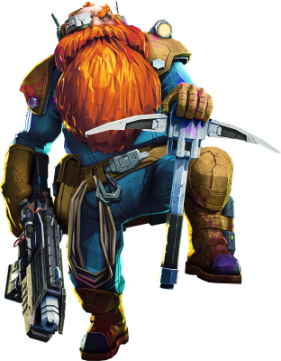
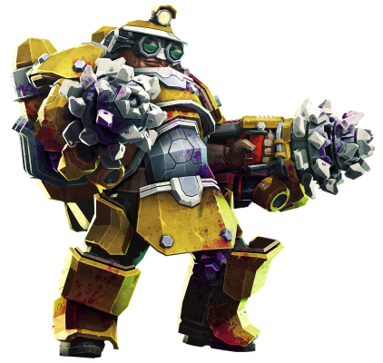

Deep Rock Galactic is a forward-thinking, innovative mining company
committed to redefining the future of resource extraction in the galaxy.
With a strong focus on cutting-edge technology and safety, we believe in
pushing the boundaries of exploration while maintaining the highest
standards of operational excellence. Our core values revolve around
teamwork, resilience, and sustainability, ensuring that every mission is
not only profitable but also responsible.
At Deep Rock Galactic, we’re not just mining — we’re shaping the
future of space mining, one planet at a time.
Ongoing operation
Deep Rock Galactic's mission on Hoxxes IV is a bold venture into one of
the galaxy's most perilous and resource-rich planets. With its hazardous
terrain, unpredictable cave systems, and aggressive wildlife, Hoxxes IV
presents a unique challenge for our experienced mining crews. Our teams
are equipped with advanced tools and technology to safely navigate the
depths, extract rare materials like Morkite and Jadiz, and gather crucial
data. The mission focuses on efficiency, safety, and resilience, as we
strive to unlock Hoxxes IV's potential while overcoming the planet’s
natural obstacles.
Our team
Our success is driven by a team of highly skilled professionals who embody
the spirit of innovation, determination, and teamwork. From seasoned
geologists and engineers to elite combat specialists and expert drillers,
every member of our crew plays a crucial role in ensuring the success of
each mission on the most unforgiving planets.
Scout

The Scout is the team’s agile navigator, using advanced mobility tools to
explore Hoxxes IV’s challenging terrain. They’re responsible for
discovering resource-rich areas, scouting for potential dangers, and
keeping the team informed, helping ensure the mission stays on track with
clear visibility of the environment.
Engineer
The Engineer is the team’s operational support, deploying essential tools
like turrets and platforms to assist in navigation and defense. They play
a key role in maintaining equipment and ensuring safe, efficient paths for
the team to follow, while also providing tactical support during
high-pressure moments.
Driller

The Driller is the team’s excavation specialist, using powerful drills to
break through Hoxxes IV’s tough rock layers and uncover valuable
resources. They create pathways, open up access to new areas, and ensure
the team can reach their objectives while managing the physical demands of
the planet’s harsh conditions.
Gunner
The Gunner is the team’s heavy support, equipped with high-powered
weaponry to protect the crew from the dangerous wildlife of Hoxxes
IV.Their primary responsibility is to provide tactical security, ensuring
the safety and protection of the team while maintaining operational
continuity and facilitating mission success.
Get in touch
Have a question about our operations or recent projects? We're here to
help! Reach out to our team for general inquiries. info(a)deeprockgalactic.com
For investors looking for financial data or updates, please contact our
Investor Relations team. finance(a)deeprockgalactic.com
Interested in joining our team? Explore exciting career opportunities with
Deep Rock Galactic and become part of a forward-thinking team shaping the
future of space mining. dwarfs(a)deeprockgalactic.com
Active mission controll can be found on the orbit of Hoxxes IV